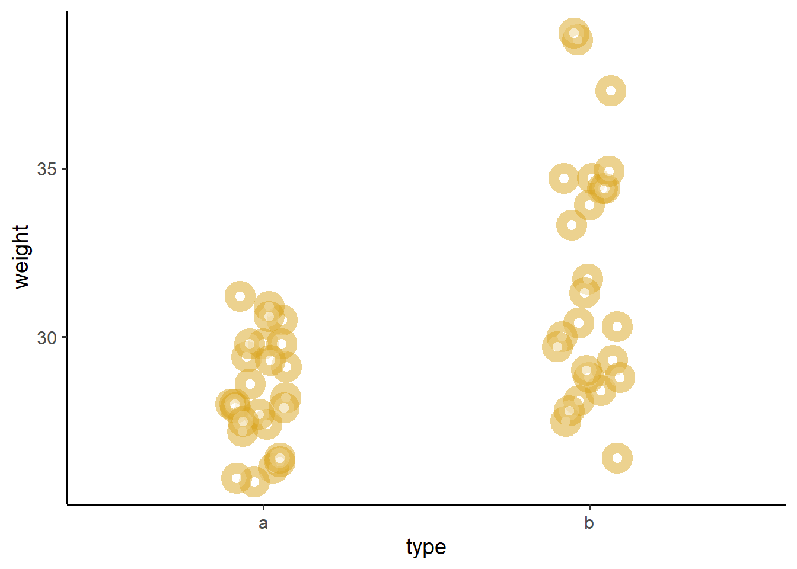
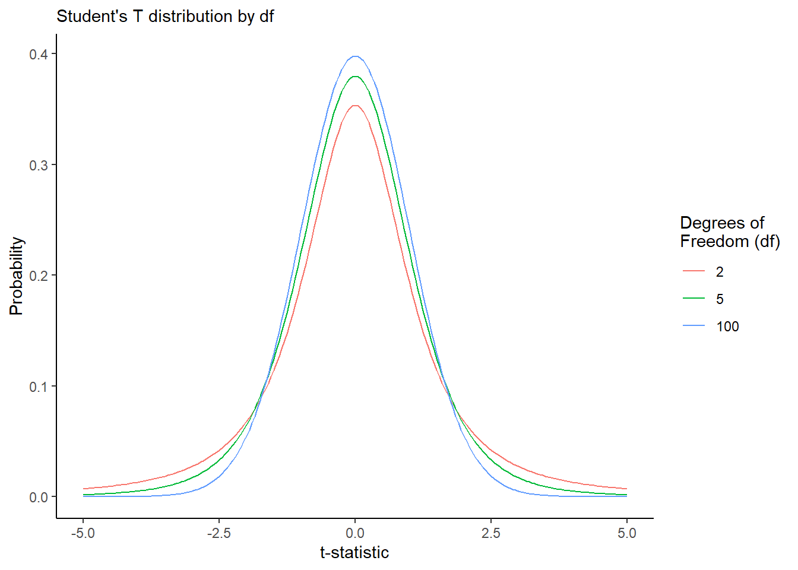
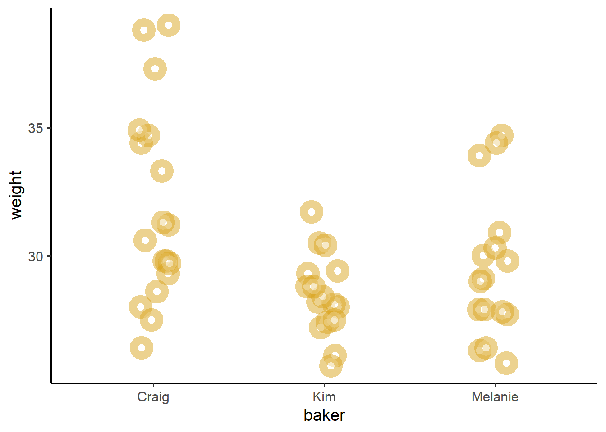

13 Workshop: Design of Experiments in R

Figure 1.1: Donuts!
This workshop introduces basic statistical techniques for conducting experiments, including t-tests, anova, and F-tests, among others.
Getting Started
Suppose Kim’s Coffee is a growing coffee chain in upstate New York. For the past 10 years, they have been using old Krispy-Kreme donut-making machines to make their locally renowned donuts. Since the machines are quickly approaching the end of their lifespan, the owners of Kim’s Coffee want to try out an alternative donut-machine - the Monster-Donut Maker 5000 - to see if it can produce donuts of comparable quality! They decide to design an experiment!
The Experiment
At their main branch, they install a Monster-Donut Maker 5000, which we’ll call type = "b", right next to their Krispy-Kreme Donut Machine, which we’ll call type = "a". They plan to measure the weight (grams), lifespan at room temperature (hours), and tastiness (0-10) of each donut produced from both machines.
Using the same ingredients, they bake the donuts for the same amount of time under the same level of heat. Each scoop they take from their dough, they randomly assign it to get baked in machine a or machine b.
But they need help! They’ve hired us to measure the impacts of their potential new donut machine (type = "b"), compared to their existing machines (type = "a"). Let’s get started!
Import Data
First, let’s import our data, where each row is a donut, with produced in one type of machine, with a specific weight, lifespan, and tastiness, each made by a baker named "Kim", "Melanie", or "Craig".
# Load packages, to get our dplyr, ggplot, tibble, and readr functions
library(tidyverse)
library(broom) # get our tidy() function
# Read data!
donuts = read_csv("workshops/donuts.csv")
# Having trouble reading in your data?
# You can also use this code:
donuts = read_csv("https://raw.githubusercontent.com/timothyfraser/sysen/main/workshops/donuts.csv")
# Check it out!
donuts %>% glimpse()## Rows: 50
## Columns: 5
## $ type <chr> "a", "a", "a", "a", "a", "a", "a", "a", "a", "a", "a", "a", …
## $ weight <dbl> 28.2, 26.1, 27.2, 25.7, 29.4, 28.0, 27.4, 30.5, 29.8, 27.9, …
## $ lifespan <dbl> 52, 54, 38, 52, 49, 50, 45, 48, 53, 52, 52, 47, 54, 41, 49, …
## $ tastiness <dbl> 1, 4, 1, 2, 4, 2, 3, 3, 3, 4, 5, 2, 2, 4, 2, 3, 1, 1, 3, 3, …
## $ baker <chr> "Kim", "Kim", "Kim", "Kim", "Kim", "Kim", "Kim", "Kim", "Mel…13.1 Difference of Means (t-tests)
13.1.1 Calculating dbar
Whenever we set up an experiment, we need to select a control group and a treatment group. In this case, our control group is the donuts produced by the original machine (type = "a"), while our treatment group is the donuts produced by the new machine (type = b).
We can then calculate a single number to summarize the relationship between these 2 groups - a statistic called the difference of means \(\bar{d}\)! It’s literally: \(\bar{d} = \bar{x}_{treatment} - \bar{x}_{control}\), where \(\bar{x}_{treatment}\) is the mean outcome for the treatment group and \(\bar{x}_{control}\) is the mean outcome for the control group.
We can use group_by() and summarize() from the dplyr package to calculate the difference diff.
Then, we can pivot the shape of this data.frame with summarize() again, so that our data.frame has just all it’s info in just 1 row:
We’ll grab the
xbarvalue from the row wheretype == "a"and putting it into the columnxbar_a.We’ll repeat this with
xbar_b, putting thexbarvalue from the row wheretype == "b"into thexbar_bcolumn.Finally, we can calculate
dbar, the difference of means, by subtractingxbar_bfromxbar_a!
stat = diff %>%
summarize(xbar_a = xbar[type == "a"],
xbar_b = xbar[type == "b"],
dbar = xbar_b - xbar_a)In summary, the mean weight of a donut from the Krispy Kreme Machine (type = a) was 28.364 grams, while the mean weight of a donut from the Monster Donut Maker 5000 (type = b) was 31.716 grams. This means that our treatment group of donuts (our type = b donuts) tended to be 3.352 grams heavier than our control group!
13.1.2 Visualizing the difference of means
We can visualize the difference of means pretty quickly, using geom_jitter().
donuts %>%
ggplot(mapping = aes(x = type, y = weight)) +
geom_jitter(height = 0, width = 0.1, size = 3, alpha = 0.5,
# Let's make a a bunch of donuts, using shape = 21 with white fill
shape = 21, fill = "white", color = "goldenrod",
# and increase the width of the outline with 'stroke'
stroke = 5) +
theme_classic(base_size = 14) 
We can see from above that donuts from machine b do sure seem to weight a little bit more. Let’s estimate whether this difference is significant, below!
13.2 Definitions: Null vs. Sampling Distributions
But, how much should we trust our statistic \(\bar{d}\) (dbar)?
We can use (1) null distributions and (2) sampling distributions to characterize our level of trust in our statistic using different statistics. Specifically:
p-values are statistics that describe Null Distributions
confidence intervals are statistics that describe Sampling Distributions.
Let’s build a working definition of these two terms.
13.3 Null Distributions
Maybe our statistic dbar is not much different from the many possible dbars we might get if our choice of donut maker were not related to donut weight.
To account for this, we can approximate the null distribution of all statistics we would get if our grouping variable were not related to our outcome, and generate a p-value for dbar.
13.3.1 Permutation Test (Computational Approach)
How can we see the null distribution? We can use resampling without replacement on our donuts data, permuting or shuffling which treatment group our donut ingredients got assigned to. This breaks any association between the outcome weight and our grouping variable type, such that any statistic we get is purely due to chance. We’ll mutate() our type vector using the sample(replace = FALSE) function, for 1000 repetitions of our data, creating 1000 random datasets, then calculate 1000 differences of means.
perm = tibble(rep = 1:1000) %>%
group_by(rep) %>%
summarize(donuts) %>%
group_by(rep) %>%
mutate(type = sample(type, size = n(), replace = FALSE)) %>%
group_by(rep, type) %>%
summarize(xbar = mean(weight)) %>%
group_by(rep) %>%
summarize(xbar_a = xbar[type == "a"],
xbar_b = xbar[type == "b"],
dbar = xbar_b - xbar_a)
# Many different dbar statistics from many permuted datasets, where the statistic is ENTIRELY due to chance.
perm %>% head(3)## # A tibble: 3 × 4
## rep xbar_a xbar_b dbar
## <int> <dbl> <dbl> <dbl>
## 1 1 30.3 29.8 -0.528
## 2 2 29.8 30.3 0.576
## 3 3 30.2 29.9 -0.368Now, let’s calculate - what percentage of random statistics were more extreme than than our observed statistic?
perm %>%
summarize(
# Get our observed statistic
estimate = stat$dbar,
# For a 2 tailed test...
# Turn all dbars positive (this takes care of the 2-tails)
# Now, what percentage of random stats were greater than the observed?
# That's our p-value!
p_value = ( sum(abs(dbar) >= abs(estimate) ) / n() ))## # A tibble: 1 × 2
## estimate p_value
## <dbl> <dbl>
## 1 3.35 0Wow! That is a super statistically significant difference of means!
We can visualize it like this. Pretty extreme, huh?
perm %>%
ggplot(mapping = aes(x = dbar)) +
geom_density(fill = "steelblue", color = "white") +
theme_classic(base_size = 14) +
geom_vline(xintercept = stat$dbar, linetype = "dashed") +
labs(x = "Difference of Means", y = "Probability (%)")
13.3.2 t-statistics (Theoretical Approach)
Alternatively, if we know the standard error of our statistic, we can calculate a t-statistic, a standardized measure telling us how extreme is our statistic in terms of a \(t\) distribution.
We can calculate it as \(t = \bar{d} / \sigma\), where \(\sigma\) is the standard error.
Much like the \(\chi^{2}\) distribution, a \(t\) distribution is a null distribution of random statistics we could get due to chance, except the \(t\) distribution is two-tailed.
\(t\) ranges from
-Infinityto+Infinity, with a mean of0.Like the \(\chi^{2}\) distribution, the \(t\) distribution gets stretched out wider for low sample sizes, but narrower for large sample sizes, to reflect our increasing precision as sample sizes increase. For any
df(degrees of freedom), we can draw a t-distribution, wheredf= \(n_{pairs} - 1\).\(t\) statistics have their own
dt(),pt(), andqt()functions inR, just like all other distributions.we can use
pt()to calculate p-values, our chance of error.
Suppose for a moment that we already found the standard error and we went and calculated our t-statistic, and we also have the degrees of freedom. We can approximate the null distribution as a t-distribution, for any number of degrees of freedom. See below for an example!
tibble(df = c(2, 5, 100)) %>%
group_by(df) %>%
summarize(t = seq(from = -5, to = 5, by = 0.05),
prob = dt(t, df)) %>%
ggplot(mapping = aes(x = t, y = prob, color = factor(df), group = df)) +
geom_line() +
theme_classic() +
labs(color = "Degrees of\nFreedom (df)",
x = "t-statistic", y = 'Probability',
subtitle = "Student's T distribution by df")
We’ll learn below how to calculate a t-statistic. The main value added behind a t-statistic is that it is computationally very easy to obtain, whereas a permutation test requires us to generate 1000s of random permutations - a more computationally expensive method.
Why Do we Assume Normal Distributions?: The reason why we rely on these assumptions is because for decades, it was not possible to approximate and visualize the shape of the of these distributions, because it was so computationally expensive! That’s why we wrote up giant tables of \(k\), \(\chi^{2}\), and \(t\) statistics instead, so that researchers could just calculate those statistics once and share the tables, rather than computing them over and over!
But, today, it’s actually quite easy, thanks to faster computers and great statistical calculators like R, to compute \(t\), \(k\), and \(\chi^{2}\) values in milliseconds, and we can even gather thousands of random samples to visualize the exact shape of our null and sampling distributions.
13.4 Sampling Distribution
Maybe our statistic dbar might have been just a little higher or lower had we produced just a slightly different sample of donuts by chance.
To account for this, we can approximate the sampling distribution for our statistic dbar and generate a confidence interval around dbar.
13.4.1 Bootstrapped CIs for dbar
If we have lots of computational power available (we do now that it’s 2020), we could bootstrap our data, taking 1000 versions of our dataset and resampling with replacement to simulate sampling error, and calculate dbar 1000 times to get the sampling distribution.
# The the donuts 1000 times
stat_boot = tibble(rep = 1:1000) %>%
group_by(rep) %>%
summarize(donuts) %>%
# For each rep, randomly resample donuts
group_by(rep) %>%
sample_n(size = n(), replace = TRUE) %>%
# For each rep and treatment group, get the mean
group_by(rep, type) %>%
summarize(xbar = mean(weight)) %>%
# For each rep, get dbar
group_by(rep) %>%
summarize(xbar_a = xbar[type == "a"],
xbar_b = xbar[type == "b"],
dbar = xbar_b - xbar_a)
# Voila! Look at those beautiful `dbar` statistics!
# We've got a full 1000 slightly varying dbars!
stat_boot %>% head()## # A tibble: 6 × 4
## rep xbar_a xbar_b dbar
## <int> <dbl> <dbl> <dbl>
## 1 1 28.5 31.5 3.04
## 2 2 28.2 32.2 4.05
## 3 3 28.4 32.5 4.13
## 4 4 28.6 30.9 2.29
## 5 5 27.9 30.7 2.76
## 6 6 28.3 31.9 3.60We can then use summarize() to compute quantities of interest from our bootstrapped sampling distribution of dbar in stat_boot, like the standard deviation (which would be the literal standard error, in this case), and confidence intervals.
stat_boot %>%
summarize(
# Let's grab our observed dbar statistic from 'stat'
estimate = stat$dbar,
# standard error of sampling distribution....
se = sd(dbar),
# lower 2.5th percentile
lower = quantile(dbar, prob = 0.025),
# upper 97.5th percentile
upper = quantile(dbar, prob = 0.975))## # A tibble: 1 × 4
## estimate se lower upper
## <dbl> <dbl> <dbl> <dbl>
## 1 3.35 0.755 1.90 4.79
13.4.2 Assume Normal CIs for dbar
Alternatively, if we don’t have lots of computational power, we could assume a normally distributed sampling distribution. Though bootstrapping is usually more accurate, it is still more common to assume your sampling distribution is normally distributed and calculate confidence intervals using a standard error instead. Here’s how you do it.
13.4.2.1 Paired-Sample/Dependent Sample T-Test (\(n_1 = n_2\))
Suppose our treatment and control group had the same sample size (they do in this case). Then, we can calculate the standard error of the difference of means \(\bar{d}\) as:
\[ \sigma = \frac{ s_{\bar{d}} }{ \sqrt{n} } = \sqrt{ \frac{ \sum{ (d - \bar{d} )^{2} } }{ n - 1} } \times \frac{1}{\sqrt{n}} \]
Here, \(d\) refers to the differences between group a and b. (This is pretty unrealistic.) You can only calculate it if the sample size of your treatment and control group is identical. For example:
# In a paired sample t-test, our data might look like this.s
paired = donuts %>%
summarize(weight_a = weight[type == "a"],
weight_b = weight[type == "b"]) %>%
# and we could calculate their differences 'd' like so:
mutate(d = weight_b - weight_a)
# Check it
paired %>% glimpse()## Rows: 25
## Columns: 3
## $ weight_a <dbl> 28.2, 26.1, 27.2, 25.7, 29.4, 28.0, 27.4, 30.5, 29.8, 27.9, 2…
## $ weight_b <dbl> 28.1, 29.3, 28.4, 28.8, 31.7, 30.4, 27.5, 28.8, 30.0, 34.7, 3…
## $ d <dbl> -0.1, 3.2, 1.2, 3.1, 2.3, 2.4, 0.1, -1.7, 0.2, 6.8, 8.6, 1.5,…And we could then calculate the standard error like so…
paired %>%
summarize(
# Get the total pairs of donuts analyzed
n = n(),
# Get mean difference / difference of means 'd'
dbar = mean(d),
# Calculate the variance of d, called 'variance'
variance = sum( (d - dbar)^2 ) / (n - 1),
# Calculate the standard deviation of d, by taking the square root of the variance
s_d = sqrt(variance),
# Calculate the standard error sigma of d,
# by dividing the standard deviation by the total sample size
se = s_d / sqrt(n))## # A tibble: 1 × 5
## n dbar variance s_d se
## <int> <dbl> <dbl> <dbl> <dbl>
## 1 25 3.35 15.6 3.95 0.789So, knowing what we do about the t-distribution, we can now run our paired sample t-test pretty quickly. Once we have a t-statistic, it’s pretty easy to then calculate a p-value, the share of statistics more extreme than ours. Let’s try calculating it all in one step!
paired %>%
summarize(n = n(),
dbar = mean(d),
se = sqrt( sum( (d - dbar)^2 ) / (n - 1) ) / sqrt(n),
df = n - 1,
# Let's calculate our t-statistic, called 'statistic'
statistic = dbar / se,
# Get the **two-tailed** p-value
# by looking at the right side of the null distribution
# getting the percentage of stats greater than abs(statistic)
# subtracting that from 1 to get the one-tailed p-value
# then multiplying that percentage by 2,
# to represent the combined error on BOTH tails
p_value = 2*(1 - pt(abs(statistic), df)),
# Let's also calculate our multiplier t on the t-distribution
# which will tell us how many standard deviations from the mean is the 97.5th percentile
t = qt(0.975, df),
# Next, let's calculate the upper and lower confidence intervals!
upper = dbar + t * se,
lower = dbar - t * se)## # A tibble: 1 × 9
## n dbar se df statistic p_value t upper lower
## <int> <dbl> <dbl> <dbl> <dbl> <dbl> <dbl> <dbl> <dbl>
## 1 25 3.35 0.789 24 4.25 0.000282 2.06 4.98 1.72Wheeeeee! Statistics!!!!!!
13.4.2.2 Unpaired-Sample/Independent Sample T-Test
On the other hand, suppose that our treatment and control group did not have the same sample size. (They usually don’t.) We can alternatively calculate the standard error using the standard deviations (\(s_1\) and \(s_2\)) and sample sizes (\(n_1\) and \(n_2\)) of the treatment and control groups.
\[ \sigma = \sqrt{ \frac{s_{1}^{2}}{n_{1}} + \frac{s_{2}^{2}}{n_{2}} } \]
Let’s try it!
# For our unpaired sampled t-test...
unpaired = donuts %>%
# For each type (donut maker)
group_by(type) %>%
# Calculate our basic ingredients...
summarize(xbar = mean(weight), # mean of each group
s = sd(weight), # standard deviation of each group
n = n()) %>% # sample size of each group
# then let's pivot the data into one row...
summarize(
# Get the means....
xbar_a = xbar[type == "a"],
xbar_b = xbar[type == "b"],
# Get the standard deviations...
s_a = s[type == "a"],
s_b = s[type == "b"],
# Get the sample sizes...
n_a = n[type == "a"],
n_b = n[type == "b"])
unpaired## # A tibble: 1 × 6
## xbar_a xbar_b s_a s_b n_a n_b
## <dbl> <dbl> <dbl> <dbl> <int> <int>
## 1 28.4 31.7 1.63 3.60 25 25We should also probably assume that our variances are not equal, meaning that we need to use a new formula to calculate our degrees of freedom. That formula is absolutely ridiculously large!
\[ df = \frac{ ( \frac{s_1^2}{n_1} + \frac{s_2^2}{n_2})^2 }{ \frac{ (s_1^2 / n_1)^2 }{ n_1 - 1 } + \frac{(s_2^2 / n_2)^2 }{ n_2 - 1 }} \]
Now, that’s pretty silly, so I’ve written a short function for us here. In a moment, we’re about to learn a really-really short method for t-tests, but it’s important that you know how it works first.
df = function(s1, n1, s2, n2){
# Calculate our ingredients...
top = (s1^2 / n1 + s2^2 / n2)^2
bottom_left = (s1^2/n1)^2 / (n1 - 1)
bottom_right = (s2^2/n2)^2 / (n2 - 1)
# Return the degrees of freedom
top / (bottom_left + bottom_right)
}Now, let’s calculate our quantities of interest!
unpaired %>%
# Let's calculate...
summarize(
# difference of means
dbar = xbar_b - xbar_a,
# standard error
se = sqrt(s_a^2 / n_a + s_b^2 / n_b),
# t-statistic
statistic = dbar / se,
# degrees of freedom
df = df(s1 = s_a, s2 = s_b, n1 = n_a, n2 = n_b),
# p-value
p_value = 2*(1 - pt(abs(statistic), df = df)),
# multiplier t
t = qt(0.975, df),
# lower 2.5% CI
lower = dbar - t * se,
# upper 97.5% CI
upper = dbar + t * se)## # A tibble: 1 × 8
## dbar se statistic df p_value t lower upper
## <dbl> <dbl> <dbl> <dbl> <dbl> <dbl> <dbl> <dbl>
## 1 3.35 0.790 4.24 33.5 0.000164 2.03 1.75 4.96
13.5 Speedy t-tests
Wow, that took a bit! Wouldn’t it be nice if some statisticians, social scientists, and natural scientists teamed up to write a single R function that did all that really quickly? They did! It’s called t.test(). You can query it using the code below, then extract its results into a data.frame using tidy() from the broom package. It allows you to simply dictate whether you want a paired test or not (paired) and whether you assume the variances in each group to be equal or noth (var.equal).
There’s just one catch. You must (!!!) turn your grouping variable type into a factor, where the treatment group comes first, followed by the control group. Otherwise, R will default to alphabetical order when calculating the difference of means. (Very important!)
donuts2 = donuts %>%
# Convert type to factor, where treatment group b is first
mutate(type = factor(type, levels = c("b", "a")))- paired t-test (equal variance)
t.test(outcome_var ~ group_var, paired = TRUE, var.equal = TRUE)
donuts2 %>%
# Run our t-test using the data from donuts, then tidy() it into a data.frame
summarize(
t.test(weight ~ type, paired = TRUE, var.equal = TRUE) %>% tidy())## # A tibble: 1 × 8
## estimate statistic p.value parameter conf.low conf.high method alternative
## <dbl> <dbl> <dbl> <dbl> <dbl> <dbl> <chr> <chr>
## 1 3.35 4.25 0.000282 24 1.72 4.98 Paired t… two.sided- unpaired t-test (equal variance):
t.test(outcome_var ~ group_var, paired = FALSE, var.equal = TRUE)
donuts2 %>%
# Run our t-test using the data from donuts, then tidy() it into a data.frame
summarize( t.test(weight ~ type, paired = FALSE, var.equal = TRUE) %>% tidy() )## # A tibble: 1 × 10
## estimate estimate1 estimate2 statistic p.value parameter conf.low conf.high
## <dbl> <dbl> <dbl> <dbl> <dbl> <dbl> <dbl> <dbl>
## 1 3.35 31.7 28.4 4.24 0.000100 48 1.76 4.94
## # ℹ 2 more variables: method <chr>, alternative <chr>- unpaired t-test (unequal variance):
t.test(outcome_var ~ group_var, paried = FALSE, var.equal = FALSE)
donuts2 %>%
# Run our t-test using the data from donuts, then tidy() it into a data.frame
summarize( t.test(weight ~ type, paired = FALSE, var.equal = FALSE) %>% tidy() )## # A tibble: 1 × 10
## estimate estimate1 estimate2 statistic p.value parameter conf.low conf.high
## <dbl> <dbl> <dbl> <dbl> <dbl> <dbl> <dbl> <dbl>
## 1 3.35 31.7 28.4 4.24 0.000164 33.5 1.75 4.96
## # ℹ 2 more variables: method <chr>, alternative <chr>
13.6 ANOVA
Alternatively, what if we’re comparing across multiple groups? Suppose, for a moment, that 3 people were involved in the donut experiment, where each person handled a different number of donuts. What if any differences were not due to the donut machine, but actually due to the person who made the donut?
We can test differences in a numeric outcome like weight between 3 or more groups (eg. baker) using Analysis of Variance (ANOVA).
13.6.1 Visualizing ANOVA
Practically speaking, ANOVA tries to ascertain how far apart three distributions are from each other, and the F statistic (ranging from 0 to Inf) shows how extreme is the difference between these distributions. If minor, F is near 0. If large gaps, F grows.
donuts %>%
ggplot(mapping = aes(x = baker, y = weight, color = baker)) +
geom_jitter(height = 0, width = 0.1, size = 3, alpha = 0.5,
# Let's make a a bunch of donuts, using shape = 21 with white fill
shape = 21, fill = "white", color = "goldenrod",
# and increase the width of the outline with 'stroke'
stroke = 5) +
theme_classic(base_size = 14)
I dunno what Craig’s doing, but his donuts are definitely not like Melanie or Kim’s donuts. Craig’s donuts are like lead bricks. So, can we put a number to just how bad Craig is at making donuts?
13.6.2 ANOVA Explained
To do analysis of variance, we’re going to go through a few quick steps.
First, let’s get our values. We’ll need to know the grand mean \(\bar{\bar{x}}\), the mean \(\bar{x_t}\) of each treatment group \(t\), as well as the values for the treatment group \(t\) and the outcome of interest \(x\) (in this case, weight).
## # A tibble: 6 × 4
## baker weight xbbar xbar
## <chr> <dbl> <dbl> <dbl>
## 1 Kim 28.2 30.0 28.5
## 2 Kim 26.1 30.0 28.5
## 3 Kim 27.2 30.0 28.5
## 4 Kim 25.7 30.0 28.5
## 5 Kim 29.4 30.0 28.5
## 6 Kim 28 30.0 28.5Next, we’ll take our ingredients to calculate our qi, our quantities of interest. These include the TSS (total sum of squares), RSS (residual sum of squares), and ESS (explained sum of squares).
Total Sum of Squares measures the total variation in your data, using the grand mean \(\bar{\bar{x}}\) as a benchmark.
Residual Sum of Squares measures how much deviation remains between your treatment group means and other values within each treatment group. This is the unexplained error in your model.
Explained Sum of Squares measures how much deviation was explained by your treatment group means (your model).
qi = values %>%
summarize(
# Calculate the *total* sum of squares
# compared to the grand mean
tss = sum( (weight - xbbar)^2),
# Calculate the *residual* sum of squares
# compared to the your 'model' prediction, xbar
# in this case, your model is the idea that the
# mean of each treatment group explains the difference in weight.
rss = sum( (weight - xbar)^2 ),
# calculate the ess - the explained sum of squares
# a.k.a the variation explained by the 'model'
ess = tss - rss,
# Get the total number of treatment groups, k
k = baker %>% unique() %>% length(),
# Get the total sample size
n = n())
# View it!
qi## # A tibble: 1 × 5
## tss rss ess k n
## <dbl> <dbl> <dbl> <int> <int>
## 1 515. 407. 108. 3 50Then, let’s use our qi to calculate an F statistic!
Though our ESS and RSS give us the sum of our squared deviations, we know that some data points are bound to vary more than others. So, we should really evaluate the relative distance between our distributions using an average of the ESS (called the mean_squares_explained) and an average of the RSS (called the mean_squares_explained - its squart root is the root-mean-squared-error, a.k.a. sigma!!!).
qi %>%
mutate(
# Get the average variation explained by dividing by k - 1 groups
mean_squares_explained = ess / (k - 1),
# Get the average variation unexplained by dividing by n - k
mean_squared_error = rss / (n - k) ) %>%
# Calculate the f-statistic,
# the ratio of the variation explained versus unexplained by your model!
mutate(f = mean_squares_explained / mean_squared_error)## # A tibble: 1 × 8
## tss rss ess k n mean_squares_explained mean_squared_error f
## <dbl> <dbl> <dbl> <int> <int> <dbl> <dbl> <dbl>
## 1 515. 407. 108. 3 50 54.0 8.66 6.24
13.6.3 Functions for ANOVA
There are a bunch of different ways to do ANVOA, depending on how much specificity you need. We could use the oneway.test(), aov() or lm() functions. Let’s compare to show their results.
13.6.4 lm() - the easy way
Here, sigma gives you the residual standard error (which is the square root of the root-mean-squared-error that anova gives you). statistic gives you the F-statistic, while p.value gives you the p-value for the F-statistic.
m1 = donuts %>%
summarize(lm(weight ~ baker) %>% glance()) %>%
select(sigma, statistic, p.value, df)
m1## # A tibble: 1 × 4
## sigma statistic p.value df
## <dbl> <dbl> <dbl> <dbl>
## 1 2.94 6.24 0.00395 2Practically speaking, I tend to use the lm() function for my ANOVA needs, because I can use the predict() function to flexibly make predictions.
13.6.5 aov() - the normal way
Here, we get the F statistic and its p.value, as well as several quantities used to calculate the f-statistic, including the root-mean-squared-error (row 2 Residuals, column meansq).
## # A tibble: 2 × 6
## term df sumsq meansq statistic p.value
## <chr> <dbl> <dbl> <dbl> <dbl> <dbl>
## 1 baker 2 108. 54.0 6.24 0.00395
## 2 Residuals 47 407. 8.66 NA NA13.6.6 oneway.test() - if you know your group variances are unequal
Alternatively, oneway.test() can let you use var.equal = TRUE or FALSE to lightly adjust your statistics to accommodate uneven variances among groups. Randomization should usually deal with unequal variances, but if you’re working with non-random samples, be sure to check your variances and then use var.equal = FALSE.
# If even...
donuts %>%
summarize(oneway.test(data = ., formula = weight ~ baker, var.equal = TRUE) %>% tidy())# If uneven...
donuts %>%
summarize(oneway.test(formula = weight ~ baker, var.equal = FALSE) %>% tidy())
13.6.7 Multiple Variables
But what if we need to test the impact of multiple variables simultaneously?
For example, what if we want to assess how much differences in average weight were due to the type of machine versus the baker?
# We can add both type and baker to the model
m2 = donuts %>%
summarize(lm(formula = weight ~ type + baker) %>% glance()) %>%
# and compare our statistic and sigma values to before.
select(sigma, statistic, p.value, df)Let’s stack our earlier ANOVA model m1 on top of our new model m2. We can see from the sigma statistic that the residual standard error (average prediction error) has decreased in our new model, indicating better model fit. We can also see that adding baker had led to a greater F statistic with a lower, more significant p.value.
## # A tibble: 2 × 5
## sigma statistic p.value df vars
## <dbl> <dbl> <dbl> <dbl> <chr>
## 1 2.94 6.24 0.00395 2 baker
## 2 2.41 14.3 0.00000102 3 type + bakerAlternatively, what if Craig is pretty okay at making donuts with the old machine, but is just particularly bad at making donuts on the new machine? For this, we can use interaction effects.
m3 = donuts %>%
lm(formula = weight ~ type * baker) %>%
glance() %>%
select(sigma, statistic, p.value)
m3## # A tibble: 1 × 3
## sigma statistic p.value
## <dbl> <dbl> <dbl>
## 1 2.24 11.7 0.000000310We see here that our statistic is greater than in the original model m1, and with a significance p.value, but m2 had a higher F statistic. However, if we had empirical reasons that supported this model - eg. we randomly assigned donuts by type and baker - then we would need to use an interaction model to estimate effects accurately.